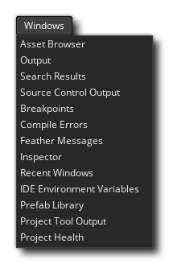

这个菜单是用来打开一般停靠的IDE 窗口。由于基座可以被重新安排，其内容可以作为独立的窗口被移除，甚至完全关闭，这个窗口允许你在发现你需要它们的时候重新打开它们。 可以从这里打开的窗口是资产浏览器窗口和所有不同的输出窗口（输出、搜索、Source Control 。 Breakpoints 和编译/语法错误）。)
接下来你可以打开检查器窗口。这个窗口用来检查当前选定的IDE 元素的属性，然后可以根据需要对这些属性进行编辑。
在 "检查器 "选项之后，你有一个 "最近的窗口"列表，还有一个选项是打开 "环境变量"窗口，在那里你可以看到不同的paths ，在首选项中使用的各种环境变量都指向。 在首选项中使用的各种环境变量的指向。这些变量不能被编辑（无论是它们的名字还是它们的路径/设置），但你可以选择并复制/粘贴它们中的任何一个用于 其他地方。
最后你可以选择打开教程窗口。这将重新打开任何与你已经打开的教程项目有关的窗口。
但前提是该项目是作为教程的一部分而创建的（如果不是，这个选项将不可用）。关于创建你自己的教程项目的信息，请参见市场部分（因为所有的教程都是从那里创建、托管和下载的）。